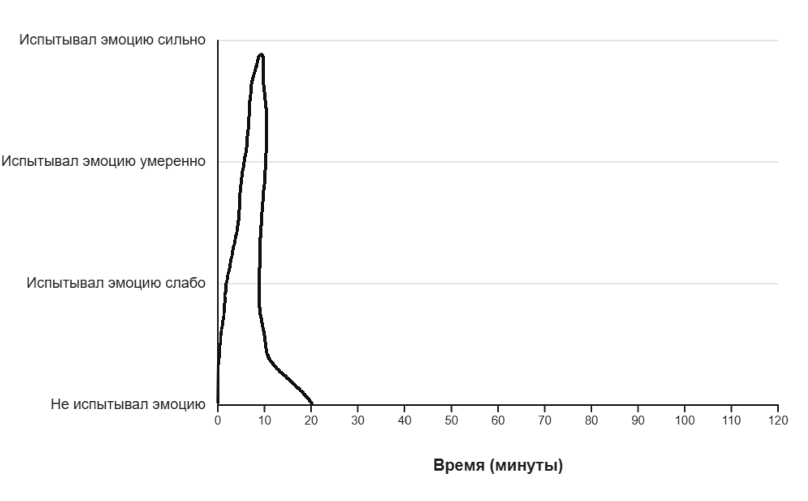

Далее вам будет необходимо изобразить, как менялись во времени ваши эмоции. Мы попросим вас выбрать эмоциональную ситуацию из недавнего времени. На графике по вертикали отмечена сила эмоций, а по горизонтали — время. График начинается с точки 0 по обеим осям. Чтобы нарисовать график, нажимайте на нужные места экрана. Сайт автоматически соединит поставленные точки плавной линией. Чем выше точка, тем сильнее была эмоция. Чем правее точка, тем больше времени прошло. Вы можете перемещать точки, если хотите изменить график, а также добавлять и удалять их.
Разберём на примере. Валентин встретил на улице бродячую собаку. Он боится собак и сильно испугался. Собака вскоре убежала и страх Валентина ослаб, хотя ещё 20 минут он был немного напряжён и чувствовал учащённое сердцебиение. Он изобразил такой график:

Другой пример. Валентин встревожился, когда, будучи на работе, вспомнил, что по рассеянности мог не закрыть дверь домой. В течение полутора часов его тревога нарастала, пока он прокручивал в голове мысль о незапертой двери. Потом Валентин совершил душевное усилие и рационально убедил себя, что не мог не закрыть дверь, ведь всегда закрывает её. Это успокоило его. Он изобразил такой график:

Для исследования НЕ подходят эмоции, которые:
Постарайтесь снова вжиться в ту эмоцию — вспомните:
По инструкции из предыдущего раздела и с опорой на примеры постройте график изменения силы ваших эмоций в этой ситуации.
Оцените значимость события, вызвавшего эмоцию
По инструкции из предыдущего раздела и с опорой на примеры постройте график изменения силы ваших эмоций в этой ситуации.
Оцените значимость события, вызвавшего эмоцию
По инструкции из предыдущего раздела и с опорой на примеры постройте график изменения силы ваших эмоций в этой ситуации.
Оцените значимость события, вызвавшего эмоцию